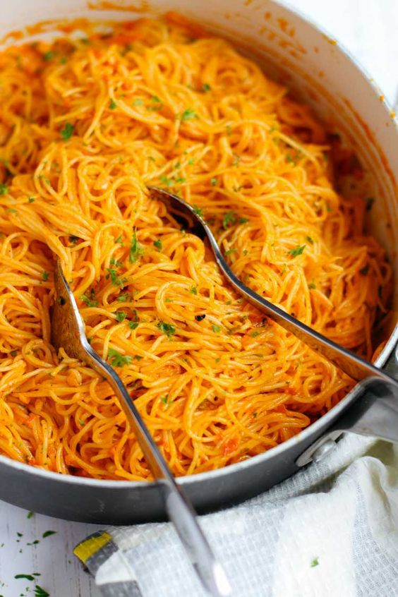
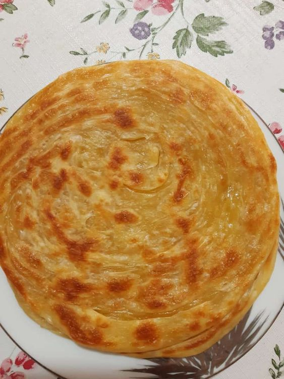
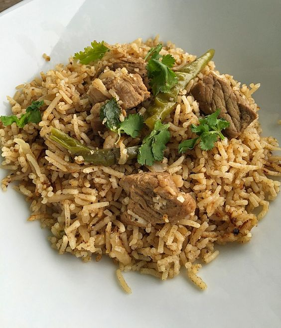
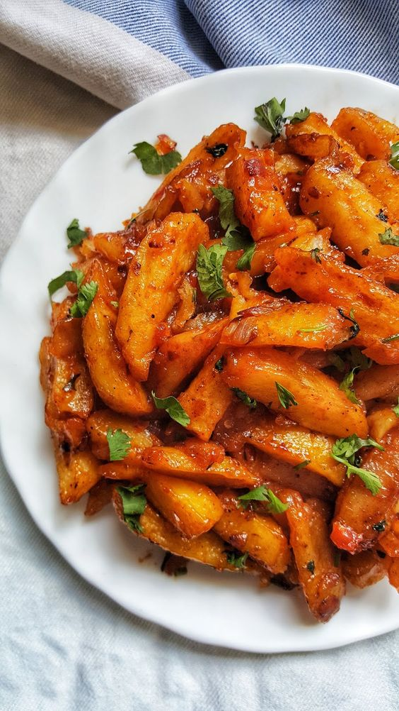
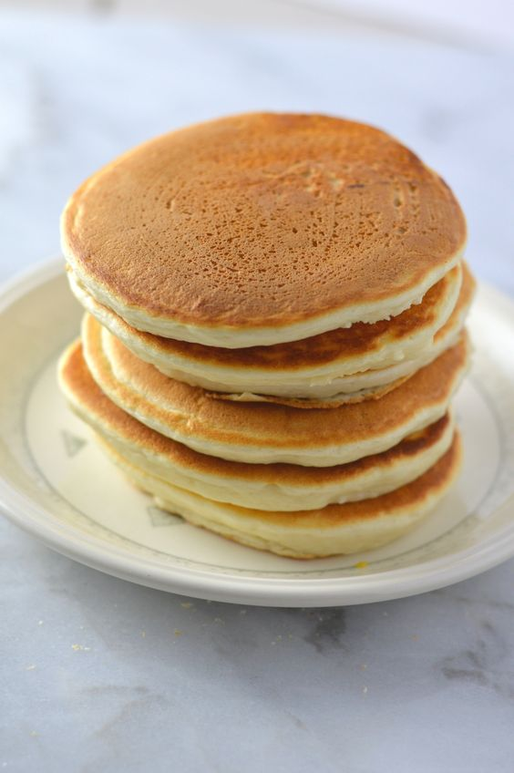

Noodles
 ViewChapati
Kenyan Chapati is a soft, flaky, chewy flatbread that is a staple
part of celebratory meals in Kenya

Pilau
Pilau is a traditional, beautiful fragrant rice dish made with many
aromatic spices that adds an amazing depth of flavor to the rice
Kimchi

Kimchi is a traditional Korean side dish consisting of salted
and fermented vegetables, most often napa cabbage
Chips Masala
masala chips are a popular street food made from deep-fried
potato slices seasoned with a flavour-packed, spicy masala blend
Vanilla Pancakes
Vanilla Pancakes are the perfect for weekend meal!.Made using
only 7 ingredients and are complete in just three simple steps.